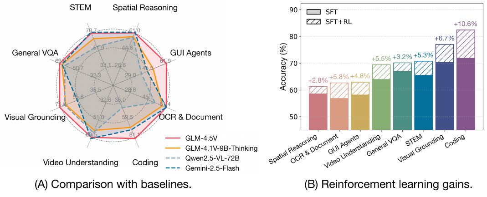
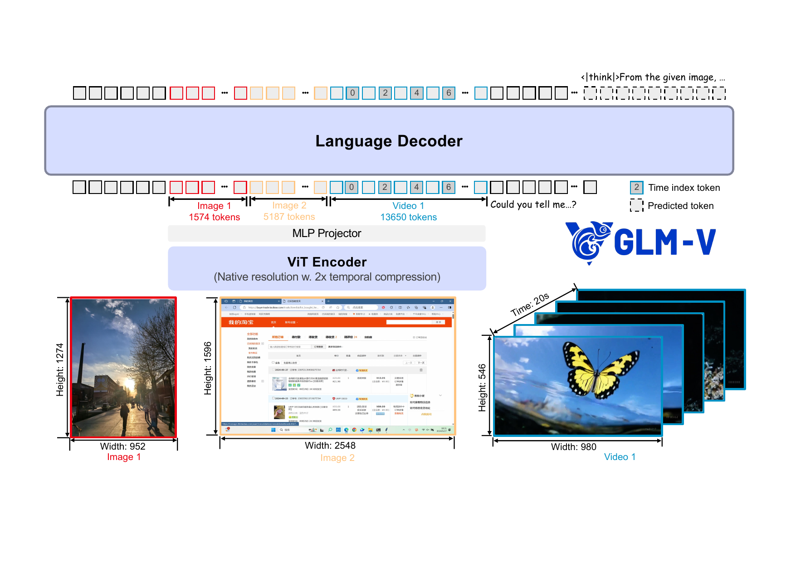
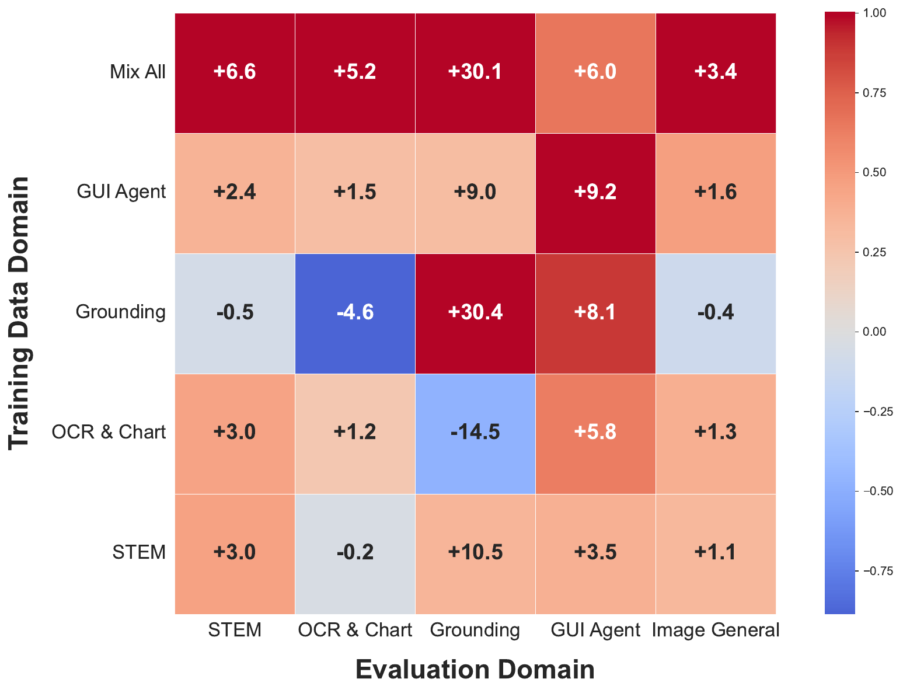

Problem & Motivation
Multimodal tasks (STEM, video, GUI Agent, OCR, etc.) demand far more than simple visual perception from VLMs. The open-source community lacks a model that consistently outperforms same-size non-thinking models across diverse tasks.
How to migrate the Scalable RL paradigm from LLM to VLM end, achieving systematic improvement in cross-domain reasoning?
STEM Reasoning | Video Understanding | GUI Agent | OCR / Doc Parsing | Chart Comprehension | Visual Grounding
RLCS (Curriculum Sampling RL) dynamically selects the most informative samples based on the model's current capability — the key engineering trick behind RL success on VLMs.

Training Pipeline & RLCS
Large-scale image-text pairs + interleaved academic corpus + document charts + tutorial videos + synthetic grounding data.
Cross-domain domain-specific SFT dataset teaching the model a unified reasoning format.
Offline + online difficulty estimation via pass@k scoring; prioritizes mid-difficulty samples; Ratio EMA maintains training stability.
Force Answering (force truncated output to answer) | Discard KL Loss (VLM KL rises faster) | Clip-Higher (prevent entropy collapse) | top-p=1 (avoid garbled output) | Per-sample loss (more stable than per-token)

Results & Key Findings
SOTA across 42 public benchmarks; on par with or surpassing Gemini-2.5-Flash on 22 benchmarks.
| Benchmark | GLM-4.5V-Thinking | Qwen2.5-VL-72B |
|---|---|---|
| Key Comparisons | ||
| MMBench v1.1 | 88.2 | — |
| MMStar | 75.3 | 70.8 |
| MathVista | SOTA | 74.8 |
| GLM-4.1V-9B vs Qwen2.5-VL-72B | 29/42 benchmarks won | |
Training in one domain boosts performance in others. GUI Agent data (OCR + visual grounding + logical reasoning) is the strongest cross-domain transfer signal.
Sequence Packing + Gradient Accumulation (32K context) | Load Balancing across DP Ranks | intra-rank optimization cuts F/B time in half.
